Snakes of South Sudan
124 living snake species are recorded in South Sudan in SnakeList: 42 venomous and 82 non-venomous, from 12 families.
- 124living species
- 12families
Danger to people · tap a number to show only those snakes
Harmful = dangerously venomous + giant constrictors. HarmlessLow risk = not venomous and not a giant constrictor. Mildly venomous snakes have no serious bites to people documented. Any snake can bite.
These totals count the unique living snake species SnakeList records in South Sudan. A species counts if it is recorded anywhere in the country, so not every snake lives in every part of it.
In SnakeList’s checklist filters
How many of the 124 living species here each filter in the SnakeList app picks out – tap a number to show only those snakes.
Snake family6 types, 12 families
Type
Family
Habitats14 habitat groups
Habitats are estimated from where each snake is recorded and what kind of snake it is, as in SnakeList; a snake can count in several.
Characteristics42 venomous, 4 constrictors
Constrictor and Non-constrictor count only snakes whose family or genus is documented as constricting or not; the rest are not documented.
Other filters7 popular, 22 rare
- 0extinct
Species
Showing 124 species
 African Bush ViperAtheris squamigera
African Bush ViperAtheris squamigera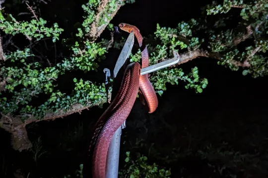
African CobraNaja pallida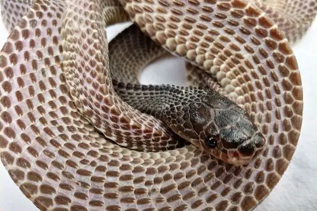
African File SnakeLimaformosa crossi African Rock PythonPython sebae
African Rock PythonPython sebae African Shovel-nosed SnakeScaphiophis albopunctatus
African Shovel-nosed SnakeScaphiophis albopunctatus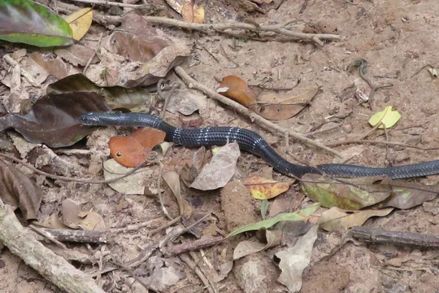
Angolan Garter SnakeElapsoidea semiannulata Angolan Shovel-snoutProsymna ambigua
Angolan Shovel-snoutProsymna ambigua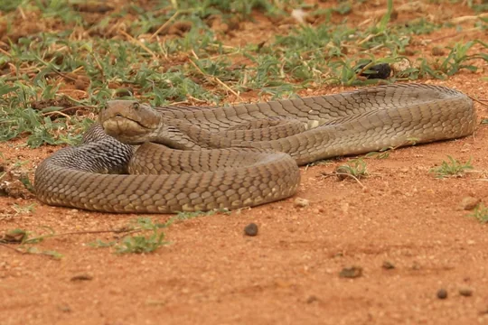
Ashe's Spitting CobraNaja ashei Ball PythonPython regius
Ball PythonPython regius Battersby's Green SnakePhilothamnus battersbyi
Battersby's Green SnakePhilothamnus battersbyi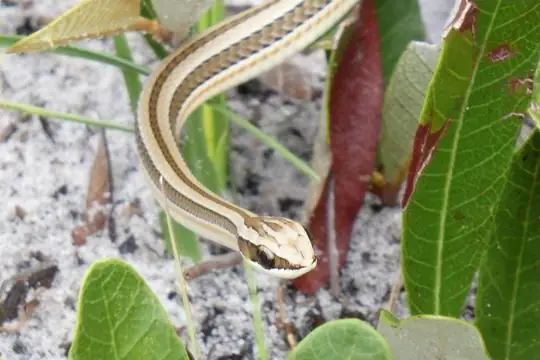
Beaked SkaapstekerKladirostratus acutus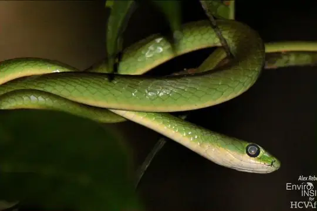
Bequaert's Green SnakePhilothamnus bequaerti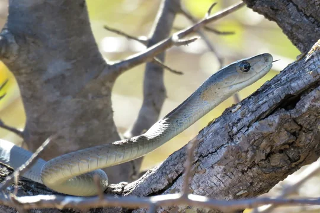
Black MambaDendroaspis polylepis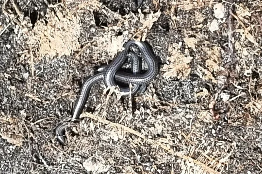
Black Thread SnakeLeptotyphlops nigricans Black-lined Green SnakeHapsidophrys lineatus
Black-lined Green SnakeHapsidophrys lineatus Black-necked Spitting CobraNaja nigricollis
Black-necked Spitting CobraNaja nigricollis Blackbelly SnakeHydraethiops melanogaster
Blackbelly SnakeHydraethiops melanogaster Blandings Tree SnakeToxicodryas blandingii
Blandings Tree SnakeToxicodryas blandingii BoomslangDispholidus typus
BoomslangDispholidus typus- No photo yetButler's Two-headed SnakeChilorhinophis butleri
 Cape Wolf Snake (capense)Lycophidion capense
Cape Wolf Snake (capense)Lycophidion capense Cape Wolf Snake (multimaculatum)Lycophidion multimaculatum
Cape Wolf Snake (multimaculatum)Lycophidion multimaculatum Central African Egg-eating SnakeDasypeltis fasciata
Central African Egg-eating SnakeDasypeltis fasciata Common Egg EaterDasypeltis scabra
Common Egg EaterDasypeltis scabra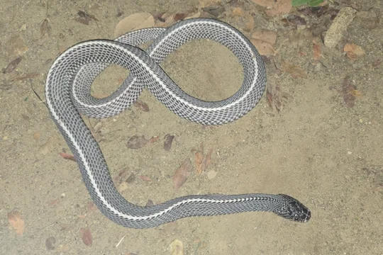
Common File SnakeLimaformosa capensis Common Night AdderCausus rhombeatus
Common Night AdderCausus rhombeatus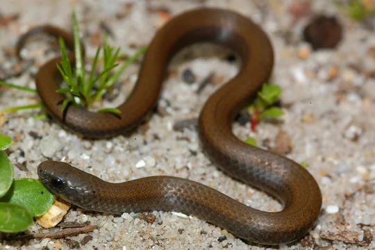
Common Slug EaterDuberria lutrix Confusing Egg EaterDasypeltis confusa
Confusing Egg EaterDasypeltis confusa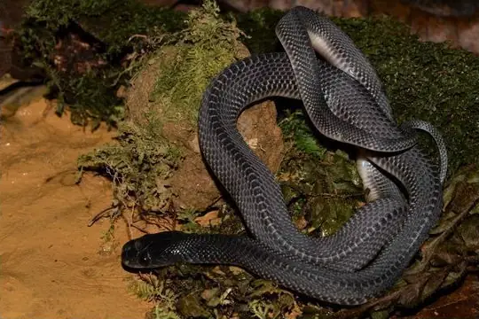
Congo File SnakeLimaformosa savorgnani Dull Purple-glossed SnakeAmblyodipsas unicolor
Dull Purple-glossed SnakeAmblyodipsas unicolor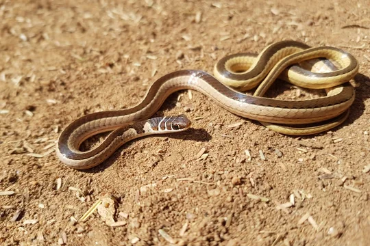
Dwarf Sand SnakePsammophis angolensis Eastern Crowned Smooth SnakeMeizodon regularis
Eastern Crowned Smooth SnakeMeizodon regularis- No photo yetEastern Snake-eaterPolemon christyi
 Egyptian CobraNaja haje
Egyptian CobraNaja haje Egyptian Saw-scaled ViperEchis pyramidum
Egyptian Saw-scaled ViperEchis pyramidum Elegant Sand RacerPsammophis elegans
Elegant Sand RacerPsammophis elegans Emerald Green SnakePhilothamnus heterodermus
Emerald Green SnakePhilothamnus heterodermus Emerald SnakeHapsidophrys smaragdinus
Emerald SnakeHapsidophrys smaragdinus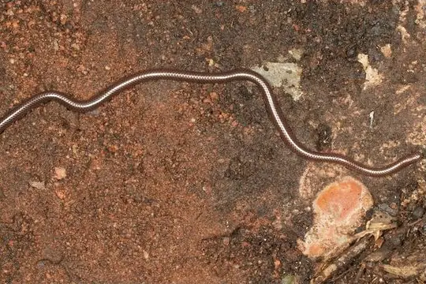
Emin Pasha's Worm SnakeLeptotyphlops emini Equatorial File SnakeMehelya poensis
Equatorial File SnakeMehelya poensis Ethiopian Hook-nosed SnakeScaphiophis raffreyi
Ethiopian Hook-nosed SnakeScaphiophis raffreyi- No photo yetFeeble Gracile Blind-snakeLetheobia debilis
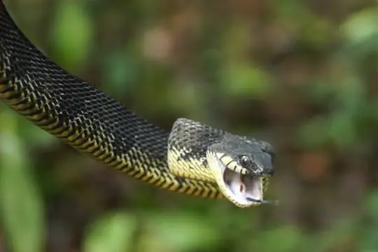
Fierce Night StalkerToxicodryas vexator Fischer's Cat SnakeToxicodryas pulverulenta
Fischer's Cat SnakeToxicodryas pulverulenta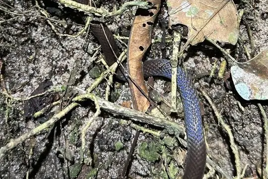
Flat Wolf SnakeLycophidion laterale Flat-snouted Wolf SnakeLycophidion depressirostre
Flat-snouted Wolf SnakeLycophidion depressirostre Flowered RacerPlatyceps florulentus
Flowered RacerPlatyceps florulentus Forest CobraNaja melanoleuca
Forest CobraNaja melanoleuca Forest Night AdderCausus lichtensteinii
Forest Night AdderCausus lichtensteinii Gaboon ViperBitis gabonica
Gaboon ViperBitis gabonica Gans' Egg EaterDasypeltis gansi
Gans' Egg EaterDasypeltis gansi Ghana Herald SnakeCrotaphopeltis hippocrepis
Ghana Herald SnakeCrotaphopeltis hippocrepis Ghana Shovel-snoutProsymna meleagris
Ghana Shovel-snoutProsymna meleagris Green Night AdderCausus resimus
Green Night AdderCausus resimus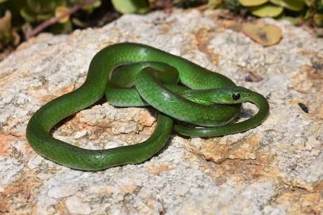
Green Water SnakePhilothamnus hoplogaster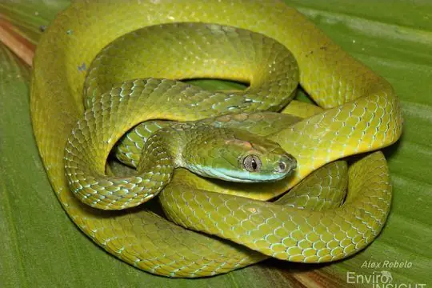
Günther's Green Tree SnakeDipsadoboa unicolor Hughes' Green SnakePhilothamnus hughesi
Hughes' Green SnakePhilothamnus hughesi Jackson's Black Tree SnakeThrasops jacksonii
Jackson's Black Tree SnakeThrasops jacksonii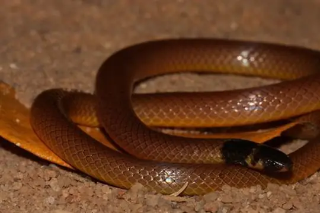
Jackson's Centipede-eaterAparallactus jacksonii Kirtland's Twig SnakeThelotornis kirtlandii
Kirtland's Twig SnakeThelotornis kirtlandii Large-eyed Green TreesnakeRhamnophis aethiopissa
Large-eyed Green TreesnakeRhamnophis aethiopissa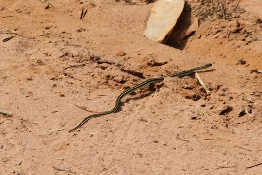
Lined Olympic SnakePsammophis lineatus Lineolate Blind SnakeAfrotyphlops lineolatus
Lineolate Blind SnakeAfrotyphlops lineolatus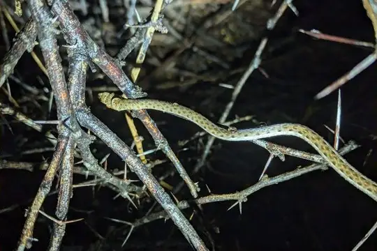
Link-marked Sand SnakePsammophis biseriatus Loveridge's Garter SnakeElapsoidea loveridgei
Loveridge's Garter SnakeElapsoidea loveridgei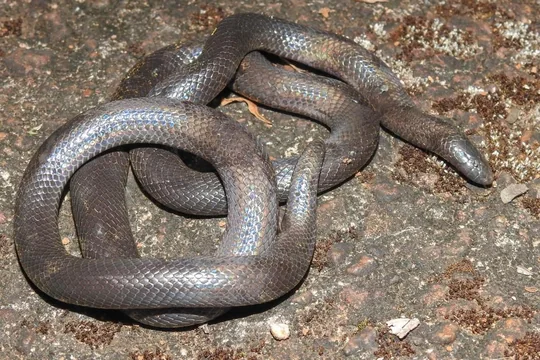
Mole Viper (aterrima)Atractaspis aterrima Montane Egg-eaterDasypeltis atra
Montane Egg-eaterDasypeltis atra Mopane SnakeHemirhagerrhis nototaenia
Mopane SnakeHemirhagerrhis nototaenia Müller’s Sand BoaEryx muelleri
Müller’s Sand BoaEryx muelleri North African CatsnakeTelescopus tripolitanus
North African CatsnakeTelescopus tripolitanus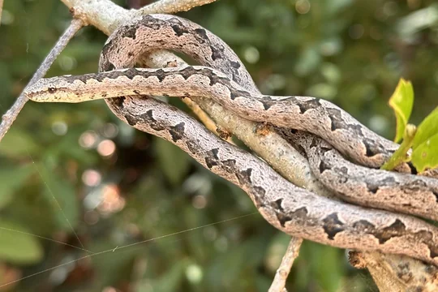
Northern Bark SnakeHemirhagerrhis hildebrandtii Olive Grass RacerPsammophis phillipsii
Olive Grass RacerPsammophis phillipsii Olive Marsh SnakeNatriciteres olivacea
Olive Marsh SnakeNatriciteres olivacea Olive Whip SnakePsammophis mossambicus
Olive Whip SnakePsammophis mossambicus Ornate African Water SnakeGrayia ornata
Ornate African Water SnakeGrayia ornata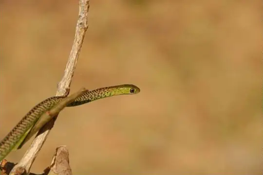
Ornate Green SnakePhilothamnus ornatus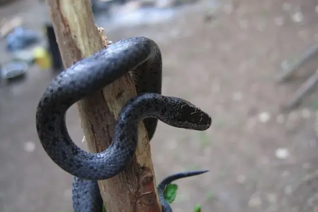
Ornate Wolf SnakeLycophidion ornatum Pale Wolf SnakeLycophidion irroratum
Pale Wolf SnakeLycophidion irroratum Peri-Forest House SnakeBoaedon perisilvestris
Peri-Forest House SnakeBoaedon perisilvestris Peters' Burrowing AspAtractaspis fallax
Peters' Burrowing AspAtractaspis fallax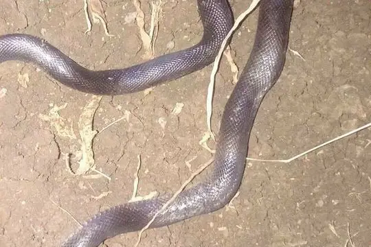
Phillips' Burrowing AspAtractaspis phillipsi Plumbeous Centipede EaterAparallactus lunulatus
Plumbeous Centipede EaterAparallactus lunulatus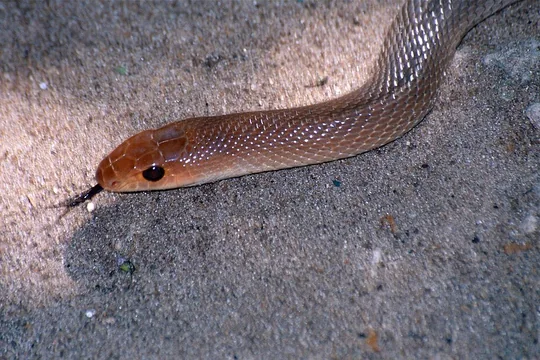
Red Beaked SnakeRhamphiophis rubropunctatus Red-Black Striped SnakeBothrophthalmus lineatus
Red-Black Striped SnakeBothrophthalmus lineatus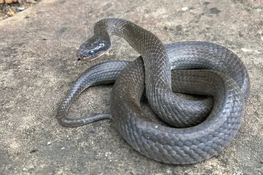
Red-lipped SnakeCrotaphopeltis hotamboeia Rhinoceros Viper (nasicornis)Bitis nasicornis
Rhinoceros Viper (nasicornis)Bitis nasicornis Ringed Water CobraNaja annulata
Ringed Water CobraNaja annulata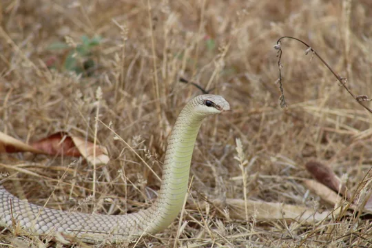
Rufous Beaked SnakeRhamphiophis rostratus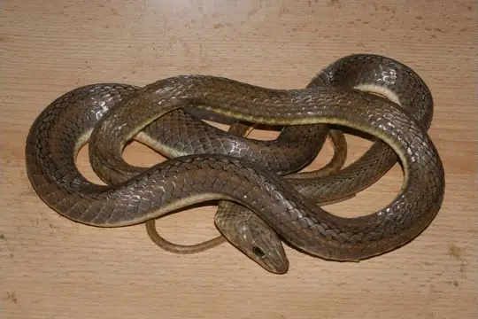
Rukwa Sand RacerPsammophis rukwae Sand BoaEryx colubrinus
Sand BoaEryx colubrinus- No photo yetScortecci's Blind SnakeMyriopholis braccianii
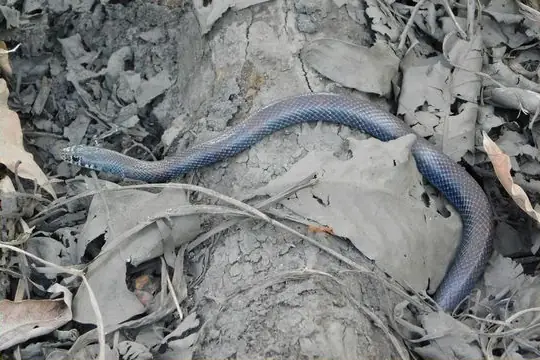
Semiornate Smooth SnakeMeizodon semiornatus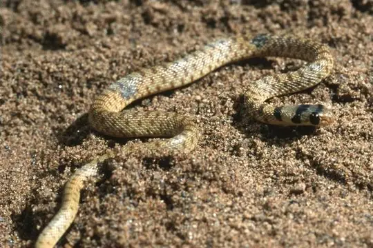
Short RacerPlatyceps brevis Slender Green SnakePhilothamnus heterolepidotus
Slender Green SnakePhilothamnus heterolepidotus Small-eyed File SnakeMehelya stenophthalmus
Small-eyed File SnakeMehelya stenophthalmus- No photo yetSmall-Scaled Burrowing AspAtractaspis microlepidota
 Smith's African Water SnakeGrayia smithii
Smith's African Water SnakeGrayia smithii- No photo yetSomali Giant Blind-snakeAfrotyphlops brevis
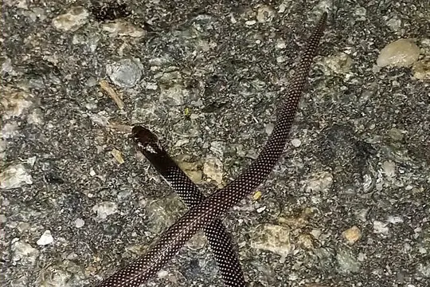
Southern Sahel Speckled Shovel-snoutProsymna greigerti Speckled Sand RacerPsammophis punctulatus
Speckled Sand RacerPsammophis punctulatus Spotted Blind SnakeAfrotyphlops punctatus
Spotted Blind SnakeAfrotyphlops punctatus Spotted Bush SnakePhilothamnus semivariegatus
Spotted Bush SnakePhilothamnus semivariegatus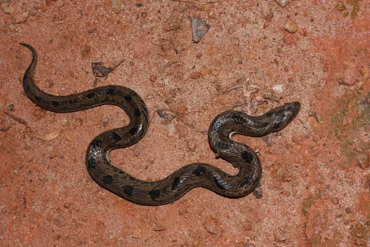
Spotted Night AdderCausus maculatus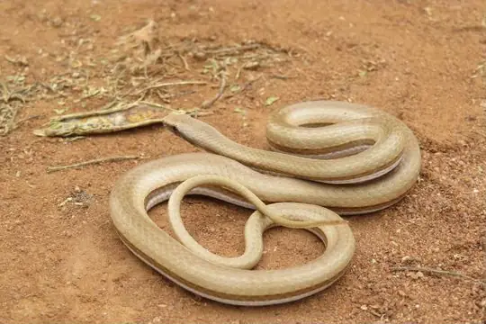
Striped Bark SnakeHemirhagerrhis kelleri Striped House SnakeBoaedon lineatus
Striped House SnakeBoaedon lineatus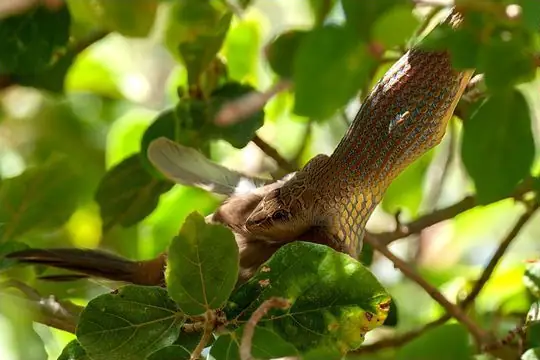
Striped Sand SnakePsammophis sibilans- No photo yetSudan Beaked SnakeLetheobia sudanensis
- No photo yetSudan Blind SnakeTricheilostoma dissimilis
 Tanganyika Sand SnakePsammophis tanganicus
Tanganyika Sand SnakePsammophis tanganicus Thirteen-scaled Green SnakePhilothamnus carinatus
Thirteen-scaled Green SnakePhilothamnus carinatus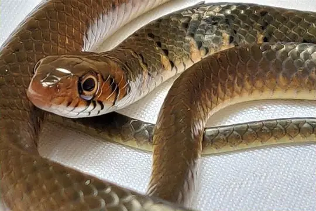
Tholloni's African Water SnakeGrayia tholloni- No photo yetTorit Gracile Blind-snakeLetheobia toritensis
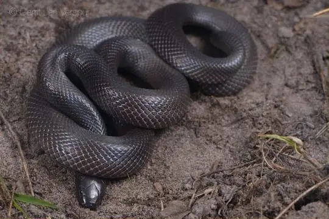
Variable Burrowing AspAtractaspis irregularis Variable Marsh Snake (variegata)Natriciteres variegata
Variable Marsh Snake (variegata)Natriciteres variegata Watson's Burrowing AspAtractaspis watsoni
Watson's Burrowing AspAtractaspis watsoni Weiler's Tree SnakeDipsadoboa weileri
Weiler's Tree SnakeDipsadoboa weileri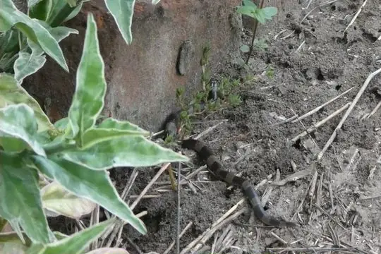
Werner's Garter SnakeElapsoidea laticincta Western Beaked SnakeRhamphiophis oxyrhynchus
Western Beaked SnakeRhamphiophis oxyrhynchus Western Crowned SnakeMeizodon coronatus
Western Crowned SnakeMeizodon coronatus Western Forest Centipede-eaterAparallactus modestus
Western Forest Centipede-eaterAparallactus modestus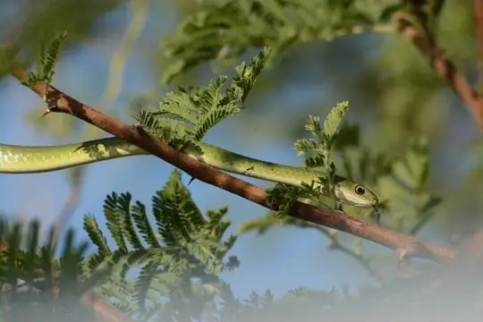
Western Green SnakePhilothamnus angolensis Western Jackson’s Wolf SnakeLycophidion jacksoni
Western Jackson’s Wolf SnakeLycophidion jacksoni- No photo yetYellow House SnakeBoaedon subflavus
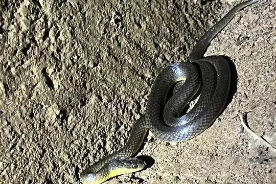
Yellow-flanked SnakeCrotaphopeltis degeni
No snakes in South Sudan match.
South Sudan’s snakes in numbers
- Families: Colubridae 43, Psammophiidae 17, Lamprophiidae 16, Atractaspididae 12, Elapidae 10, Viperidae 8, Typhlopidae 6, Leptotyphlopidae 4, Prosymnidae 3, Boidae 2, Pythonidae 2, Pseudoxyrhophiidae 1.
- 1 is recorded in no other country or territory in SnakeList: Torit Gracile Blind-snake.
How precisely they are recorded
Of the 124 living species recorded in South Sudan, 6 are recorded by state in SnakeList’s data; 118 are recorded only for South Sudan as a whole, so the state pages list them as possible rather than recorded. SnakeList records each species by state, not by exact spot, so a species listed for a state may live in only part of it.
States
The states where SnakeList records snakes, with how many living species are recorded in each. Each page has its species, venomous snakes, families, the species found only there, its cities and neighbours.
- Central Equatoria 2 species
- Jonglei 3 species
- Unity 1 species
No place matches that.
Cities
Its biggest cities, biggest first. SnakeList records snakes by state, not by city, so each city page shows the species recorded in its state and, separately, those only possible there - not species confirmed in the city.
- Juba Central Equatoria
No place matches that.